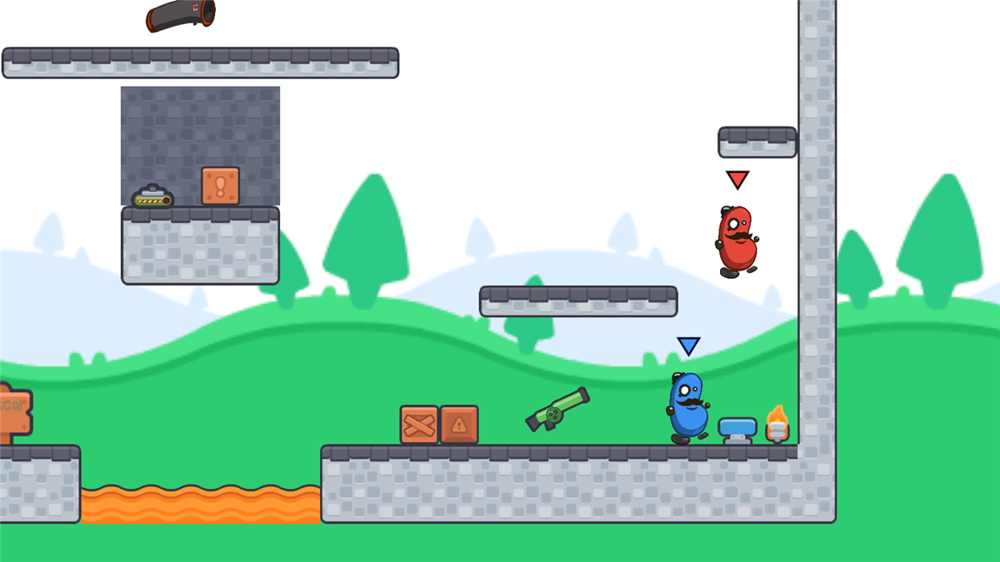
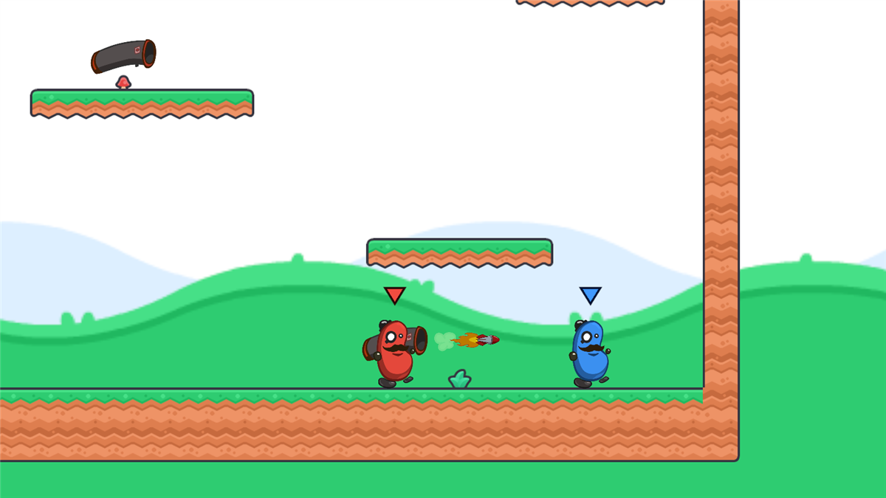
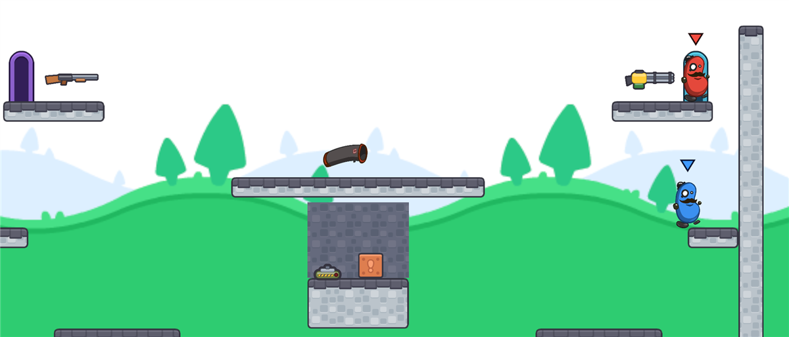
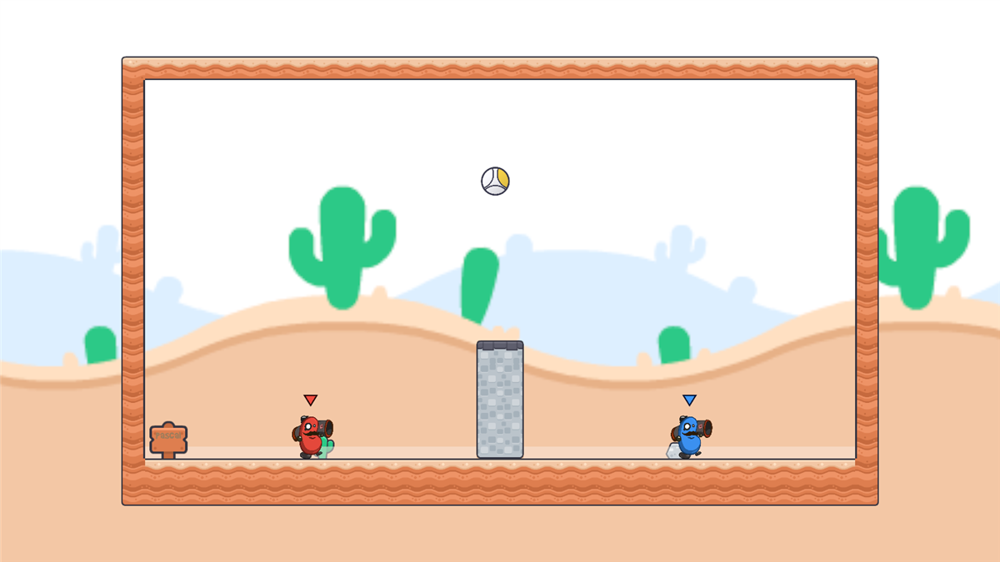

Drei Tage vom ersten Klick in Unity bis zum großen Arcade-Finale, in dem alle Level der Gruppe nacheinander gespielt werden.
Die Teens programmieren kein Spiel von null. Sie bekommen ein fertiges, spielbares 2D-Arena-Spiel im Stil von Duck Game ▶ und bauen daraus ihr eigenes Level mit eigenem Spielmodus: Tiles malen, Bausteine platzieren, Werte tunen und Auslöser mit Aktionen verbinden.

Genres und Core Loop, Unity-Grundlagen, Spieler und Waffen tunen.

Alle Bausteine kennenlernen, eine eigene Spielidee finden und das Level dafür bauen, gegenseitig testen.

Den eigenen Spielmodus fertig bauen, exportieren, alle Level gemeinsam spielen.
| Förderziel | Wo im Workshop |
|---|---|
| Spielgenres kennenlernen | Tag 1: Genre-Wand, Core Loop. Tag 2: Spielmodi (Rennen, King of the Hill, Ballspiel, Münzjagd ...) entstehen aus Bausteinen auf demselben Grundspiel |
| Eigene Spielidee als einfacher Prototyp | Tag 2: Remix-Würfel und Spielidee-Steckbrief, das Level wird für die eigene Idee gebaut. Tag 3: Bau-Sprints, eigene Spielregeln über Level Rules |
| Level Design | Tag 2: Was braucht welcher Spielmodus, alle Bausteine, Tile Palette |
| Welten bauen | Tag 2 und 3: Tilemaps, Deko, Hintergründe, Kamera passt sich jeder Levelgröße an |
| Testen | Jeden Tag: Duelle am eigenen Mac, Tag 2 Playtest-Rotation mit der Feedback-Box, Tag 3 Zwischen-Test und Arcade-Finale |
Ziel: Unity bedienen können und merken, wie Zahlen das Spielgefühl verändern.
Jede Person schreibt ihr Lieblingsspiel auf einen Zettel, gemeinsam an der Wand nach Genres sortieren. Die Lehrkraft hängt Duck Game ▶ mit dazu, darauf wird später verwiesen.
Genres, Core Loop, Ziel, Herausforderung, Feedback (TUMO-Folie 3). Beispiele von der Genre-Wand nehmen.
Zuerst den Duck-Game-Trailer ▶ zeigen: daran ist unser Spiel angelehnt. Dann zu zweit an einem Mac: Demo_Arena und Demo_RocketVolleyball spielen. Danach an der Tafel sammeln: Welche Mechaniken, Regeln und Ziele hat das Spiel?
Live vormachen, alle machen mit: Fenster, Navigieren, Auswählen, Inspector, Play-Modus. Dann TUMO > Neues Level erstellen und gleich ein paar Tiles malen: So wissen alle, wie man das Level verändert, bevor sie es auf eigene Faust probieren.
Prefab-Variante einer Waffe, neues Sprite, eigene Werte (Schrotflinte mit 12 Kugeln, Raketen-Minigun ...). Im Duell testen.
Drei Freiwillige zeigen am Beamer ihre verrückteste Waffe oder ihr bestes Movement.
TUMO > Level exportieren und die Datei vom Schreibtisch in Google Classroom hochladen. Das ist das Backup des Tages.
Ziel: eine eigene Spielidee und ein Level, das dafür gebaut ist und das andere getestet haben.
TUMO-Folien 6–9 (Sprünge, Lücken, bewegte und fallende Plattformen). Dazu: Was braucht welcher Spielmodus?
TUMO > Alle Bausteine ansehen am Beamer einmal durchlaufen: Sprungfeder, Teleporter, Kisten, Mine, bewegte Plattformen, Flagge, Tor ... Dann 5 Minuten selbst ausprobieren. Danach mit TUMO > Mein Level öffnen zurück ins eigene Level.
Im Browser die Remix-Würfel werfen: Modus × Twist × Thema, oder eine eigene Idee. Die Idee in den Spielidee-Steckbrief übernehmen, ausfüllen und die Arena skizzieren. Kurz mit der Lehrkraft prüfen: Bis morgen machbar? Wer sein Level von gestern weiterverwenden will, wählt einen Modus, der dazu passt.
Tile Palette (Ground, Platforms, Hazards, Deko), Bausteine passend zum Modus (Flagge, ScoreZone, Ball + Tor ...), Level Rules einstellen, SpawnPoints und Namensschild. Waffen immer über ein Pickup aus Prefabs/Pickups: eine Waffe direkt ins Level gezogen kann man nicht aufheben!
Live vormachen: Hebel → Tür, dann eine eigene Falle (TriggerZone → Explosive). Die grüne Zeile unter jedem Baustein in der Bausteine-Szene zeigt, woraus er gebaut ist. Danach ins eigene Level einbauen.
Alle 10 Minuten zwei Plätze weiterrücken und dort zu zweit spielen (3 Runden). Auf jedem Mac ist die Feedback-Box im Browser offen: pro getestetem Level eine Karte ausfüllen. Wer gebaut hat, schaut nur zu und sagt nichts!
Die eigene Feedback-Box lesen, den wichtigsten Punkt verbessern.
TUMO > Level exportieren und die Datei in Google Classroom hochladen.
Ziel: der eigene Spielmodus als fertiger Prototyp und ein gemeinsames Finale.
Feedback-Box lesen und im Steckbrief nachsehen: Was fehlt noch, damit die Idee funktioniert? Die drei wichtigsten Punkte aufschreiben.
Die Kern-Mechanik fertig bauen: Spielregeln, Auslöser und Aktionen, eigene Waffe oder eigener Spieler.
Platz nebenan spielt 5 Minuten. Funktioniert der Spielmodus? Wird klar, was man tun muss?
Was im Zwischen-Test aufgefallen ist, verbessern.
Deko, Balancing, Namensschild, Level-Name. Feature-Freeze um 2:55: ab dann nur noch Fehler beheben.
Alle: TUMO > Level exportieren, die Datei abgeben und in Google Classroom hochladen. Während die Lehrkraft die Arcade aufbaut, spielen alle die Level ihrer Nachbarn.
Am Beamer mit 4 Gamepads: alle Level laufen nacheinander. Wer eine Runde gewinnt, bekommt einen Punkt, dann kommt das nächste Level. Am Anfang jedes Levels steht, wer es gebaut hat.
Sticker-Voting (lustigstes Level, kreativste Idee, schönste Arena). Was habe ich gelernt? Wie geht es bei TUMO weiter?
TUMO > Level exportieren legt Name.unitypackage auf den Schreibtisch.
Per USB-Stick oder Netzwerkordner in einen Ordner auf dem Lehrer-Mac.
TUMO > Lehrer > Level-Pakete importieren... und den Ordner wählen.
TUMO > Lehrer > Arcade vorbereiten legt alle Level in die Build-Liste.
Erstes Level öffnen, Play drücken. Jede gewonnene Runde gibt einen Punkt.
| Taste | Lehrer-Tasten im Spiel |
|---|---|
| H | Hilfe und Tasten-Test (zeigt gedrückte Tasten) |
| N | Nächstes Level (kaputtes Level überspringen) |
| R | Level neu starten |
| K | Anzahl Tastatur-Spieler (2 / 1 / 0) |
| 0 | Punkte zurücksetzen |
com.unity.pipeline aus Packages/manifest.json entfernencurl -fsSL https://www.peaj.de/TUMO_ArenaKit/Tools/kit-update.sh | bashÄnderungen im Play-Modus gehen verloren. Am ersten Tag einmal bewusst „reinfallen lassen“, dann merken es sich alle.
⌘+Q beendet Unity sofort. Beim Spielen nur die linke Shift-Taste und die rechte Wahltaste zum Schießen benutzen.
Große Altersspanne: Mit den Challenge-Karten in drei Stufen (🟢 🟡 🔴) können alle in ihrem Tempo weitermachen.
Fortgeschrittene können eigene Scripts schreiben. Wichtig: Dateiname beginnt mit dem eigenen Namen, sonst gibt es im Finale Konflikte.
Nur im eigenen Ordner arbeiten. Der Export warnt, wenn Kit-Dateien verändert wurden, denn diese Änderungen kämen im Finale nicht mit.
Die Szene TUMO > Alle Bausteine ansehen zeigt unter jedem Baustein, aus welchen Auslösern und Aktionen er gebaut ist. Gut zum Nachbauen.